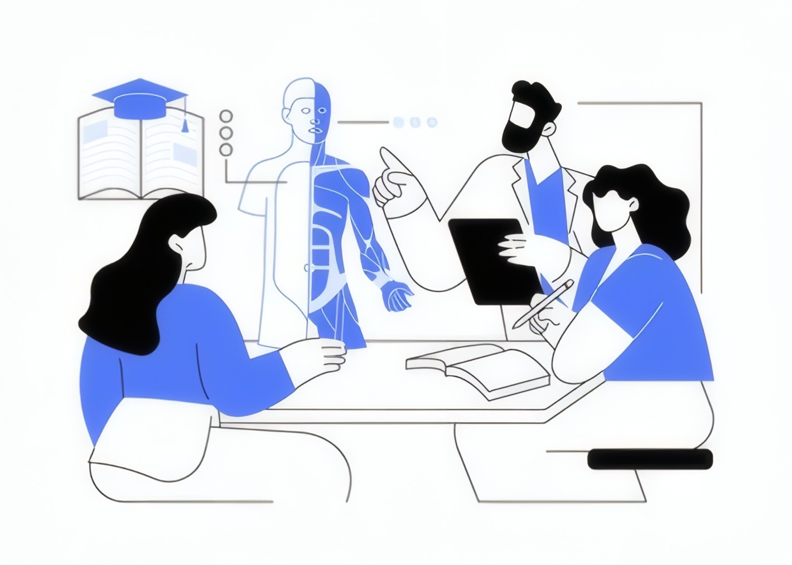
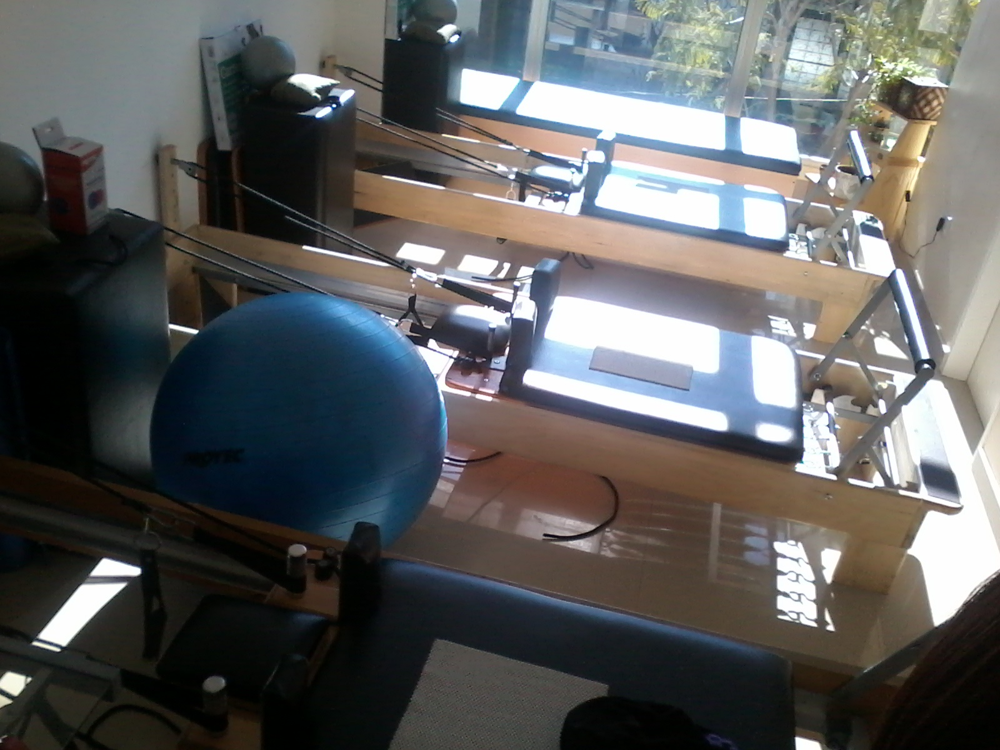
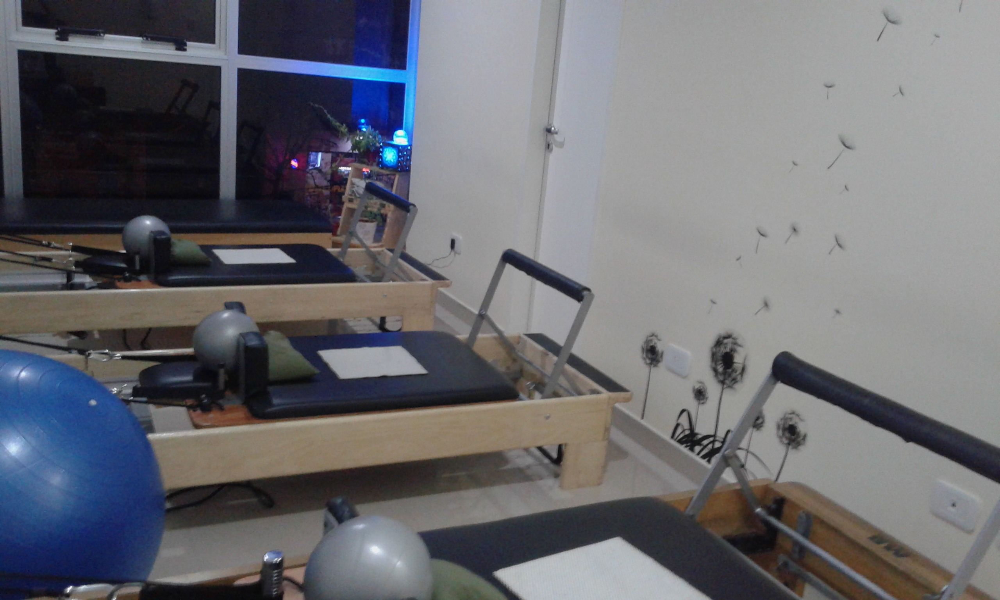

Recupera tu movilidad, mejora tu vida
Ofrecemos tratamientos personalizados de kinesiología, fisioterapia y rehabilitación motriz para ayudarte a volver a tus actividades diarias sin dolor.
Reserva tu Turno
¿Quiénes somos?
Somos un equipo de kinesiólogos comprometidos con tu bienestar. Combinamos experiencia profesional, tecnología y un trato cercano para ayudarte a recuperar el movimiento, aliviar el dolor y mejorar tu calidad de vida.
Atendemos rehabilitación postoperatoria, lesiones deportivas, dolores musculares y articulares, y prevención. Cada tratamiento se diseña a medida, porque sabemos que cada persona y cada proceso de recuperación son únicos.
Nuestra misión es acompañarte en cada etapa, hasta que vuelvas a hacer lo que más te gusta.
Nuestras instalaciones


Experiencias de Nuestros Pacientes
"Excelente atención. Llegué con un dolor lumbar severo y tras unas semanas de sesiones con los kinesiólogos volví a hacer ejercicio sin molestias."
- Carlos M., Paciente de Traumatología"La calidez humana y el profesionalismo del equipo es increíble. Me acompañaron perfectamente en toda mi rehabilitación post-quirúrgica de rodilla."
- Laura G., Paciente Deportiva